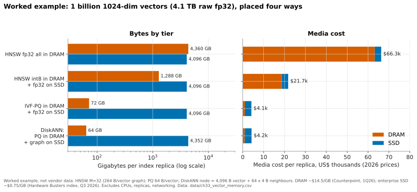

33. RAG, vector databases and AI-native data formats¶
Depth: L2 · Reading time: ~10 min · Last verified: 2026-11-01 Prerequisites: Object storage and S3 · Metadata · The AI data pipeline end to end · Inference and KV cache
TL;DR¶
- RAG turns a company's documents into an LLM's working memory. Chunks are embedded as vectors; at question time the closest chunks are pasted into the prompt. Storage sits on three steps: vector search, chunk fetch and, increasingly, KV-cache reuse.
- Vector indexes are a memory-capacity problem. One billion 1,024-dimension vectors are ~4.1 TB raw. Held in DRAM, that costs ~16× more media than an SSD-resident design such as DiskANN, so billion-scale indexes are moving to flash and object storage.
- AI-native formats change the I/O pattern. Parquet is built for scans; Lance for scans and random row reads (shuffled training, embeddings, multimodal blobs). Iceberg adds transactions and a catalog over plain files in object storage.
- Every storage vendor now ships a "data engine". VAST, NetApp, Dell, Everpure and AWS have all moved embedding, vector search or table management into or next to storage. Meanwhile vector search has become a feature of Postgres, Elastic, Databricks, Snowflake and S3 itself.
- The strategic question is who owns the control point. Bytes are replaceable; catalogs, metadata and governance are sticky. Value accrues to whoever owns the metadata and the query, unless the data cannot leave the building.
Why this matters for Everpure strategy¶
Enterprise AI is mostly inference over private data, and RAG is the default way to connect the two. That creates a storage workload of small random reads against huge indexes, plus a lakehouse of Parquet, Lance and Iceberg files in S3 buckets. It also creates a land grab. AWS put vector search and Iceberg tables inside S312. VAST added a vector-capable database3. NetApp's AI Data Engine generates embeddings "at the storage layer"4, and Dell bundled Elastic and Starburst engines into its AI Data Platform5. Everpure's answer is FlashBlade as substrate, Data Stream (ingest-to-vector pipeline, GA June 2026)6 and Data Intelligence (ex-1touch). Whether these moves capture value or merely defend share depends on a market where data platforms dwarf any storage vendor's data-services business: Databricks reported a >US$7 billion run-rate at a US$190 billion valuation (company-stated, August 2026)7, and Snowflake booked US$4.47 billion of FY2026 product revenue8.
Core concepts¶
Embeddings in one paragraph¶
An embedding model maps a chunk of text, an image or a video frame to a fixed-length vector, say 1,024 floats, trained so that similar meanings land close together. Similarity is then geometry: a cosine or dot product. For a semis reader, an embedding is a learned fingerprint, and search is a giant matrix-vector multiply (GEMV) against every stored vector, unless an index lets you skip most of them.
Embeddings can outweigh the source. A 512-token text chunk is about 2 KB (~4 bytes per token), but its 1,024-dim fp32 embedding is 4 KB. A 10 TB text corpus becomes ~5 billion chunks and ~20 TB of vectors, twice the source, before any index. For images and video the ratio flips.
The RAG request path¶
RAG was named in a 2020 Facebook AI paper9. Documents are chunked, embedded and indexed offline; at query time the system embeds the question, retrieves the nearest chunks and conditions the LLM on them.
sequenceDiagram
participant U as User or agent
participant A as RAG app
participant E as Embedding model on GPU
participant V as Vector index
participant O as Object or file store
participant R as Reranker on GPU
participant L as LLM on GPU
U->>A: question
A->>E: embed query, 10-30 ms
E-->>A: 1024-dim query vector
rect rgb(225, 238, 250)
A->>V: STORAGE - top-50 ANN search plus access filter, 2-50 ms in DRAM or SSD, 100-500 ms object-native
V-->>A: chunk IDs and scores
A->>O: STORAGE - 50 parallel GETs of chunk text, 5-50 ms
O-->>A: chunks plus metadata
end
A->>R: score 50 candidates, 20-100 ms
R-->>A: best 8 chunks
A->>L: prompt with 8 chunks, prefill 200-800 ms
rect rgb(225, 238, 250)
Note over L,O: STORAGE - reused prompt prefixes can load KV cache from flash, see Ch 32
end
L-->>U: streamed answer, first token under about 1 sFigure 33.1 — Illustrative latency budget: in a well-built RAG stack, storage-bound steps take 10–30% of time-to-first-token, but a cold object-store index can make retrieval the single largest step.
The budget is a worked illustration, not a benchmark. Object-native search ranges come from vendor documentation: Databricks quotes ~250 ms for storage-optimized endpoints10, AWS ~100 ms for frequently queried S3 Vectors indexes and sub-second otherwise11, and turbopuffer hundreds of milliseconds cold versus under 10 ms from its NVMe cache12. The lesson: retrieval is latency-bound, not bandwidth-bound. Fifty 2 KB chunks is 100 KB, but each GET pays a full round trip: about a millisecond on all-flash object storage, tens of milliseconds on a disk-based cloud tier.
Vector indexes: trading memory for recall¶
A flat scan of every vector is exact but O(N). Approximate nearest neighbour (ANN) indexes give up a few percent of recall (the share of true neighbours returned) for orders-of-magnitude speed-ups.
| Index | How it works | Memory footprint (1B × 1,024-dim) | Recall / latency | SSD-friendly? |
|---|---|---|---|---|
| Flat (brute force) | Scan every vector, often on GPU | 4.1 TB fp32, wherever it sits | 100% / seconds per query at 1B | Only as a sequential scan |
| IVF (inverted file) | Cluster vectors; probe the nearest few clusters | Centroids small; lists = full data | 90–98% tunable / ms if lists in RAM | Yes: clusters are contiguous reads (SPANN keeps lists on SSD13) |
| HNSW (graph) | Multi-layer proximity graph; greedy walk | Vectors + ~264 B/vector of links ≈ 4.4 TB | 95–99% / ~1 ms in DRAM | Poor: one dependent random read per hop |
| DiskANN / Vamana | Flat graph on SSD; PQ codes in DRAM steer the walk | ~64 GB DRAM + ~4.4 TB SSD | >95% 1-recall@1, <3 ms on SIFT1B14 | Designed for it: beam search issues parallel 4 KB reads |
| PQ / binary quantization | Compress each vector to 8–128 B codes; ADC look-up tables | 64–128 GB for 1B | Lower alone; re-rank fixes it | Codes in RAM, originals on SSD |
Table 33.1 — Index choice is a placement decision: which bytes must sit in DRAM and which can live on flash.
Worked example (the 4 TB problem). 1 billion vectors × 1,024 dimensions × 4 bytes = 4.1 × 10¹² bytes ≈ 4.1 TB raw. An HNSW graph (M = 32) adds up to 64 four-byte neighbour IDs per vector, ~264 GB. At ~US$14.5/GB for 2026 server DRAM15, an in-memory replica carries ~US$63,000 of DRAM, plus ~US$3,000 for a persisted fp32 copy on SSD. DiskANN keeps only 64-byte PQ codes in DRAM (64 GB, ~US$900) and the 4.4 TB graph on SSD at ~US$0.75/GB16 (~US$3,300). That is ~US$66k versus ~US$4k of media per replica.

Figure 33.2 — Worked example: moving the bulk of a billion-vector index from DRAM to flash cuts media cost per replica by roughly 16× at 2026 prices.
Data: data/ch33_vector_memory.csv
Why graph search on SSD works, and why it is pointer chasing¶
flowchart LR
Q["Query vector"] --> P["Approximate distances<br/>from PQ codes in DRAM"]
P --> B["Pick best W = 4<br/>unvisited frontier nodes"]
B --> S["Read 4 nodes from SSD in parallel<br/>vector + neighbour list, ~8 KB each"]
S --> X["Exact distances on full vectors<br/>push neighbours onto frontier"]
X -->|"repeat ~30 rounds"| B
X --> T["Top-k chunk IDs"]Figure 33.3 — DiskANN hides SSD latency by issuing a small batch of reads per hop, the same trick an out-of-order core uses to keep several cache misses in flight.
Semiconductor bridge. An HNSW walk is a linked-list traversal: the next address depends on data not yet loaded, so prefetchers cannot help and the walk is bound by latency. It is the irregular-access profile of graph analytics that caches handle badly. DiskANN's beam width W is memory-level parallelism. With ~30 dependent rounds at ~100 µs per NVMe read, a query takes ~3 ms, consistent with the paper. At 5,000 queries/s, 30 × 4 nodes × two 4 KB sectors is ~1.2 million random reads per second, within reach of a few data-centre NVMe SSDs. Behind a networked array adding ~0.5 ms per round trip, a query takes ~15–18 ms; behind a 20 ms object GET, ~600 ms. That is why object-storage-native engines (turbopuffer, Pinecone serverless) prefer clustered IVF/SPANN-style layouts, which need a few large reads instead of dozens of dependent small ones1217.
PQ is weight quantization for vectors. Product quantization splits a 1,024-dim vector into 64 sub-vectors and replaces each with a 1-byte codebook index: 4,096 bytes → 64 bytes. Distances come from table look-ups, as palettized or INT4 weights trade accuracy for memory in inference. The fix for lost accuracy is re-ranking top candidates with full-precision vectors from SSD. Elastic's "BBQ" pushes this to 1 bit per dimension and claims ~95% memory reduction18.
Production systems combine these. Milvus offers a DiskANN index19; Pinecone serverless keeps immutable "slabs" in object storage, cached on executor SSDs17; S3 Vectors scales to 2 billion vectors per index and 20 trillion per bucket1. The direction is clear: DRAM for steering, flash for the index, object storage for durability.
File formats: Parquet versus Lance¶
Parquet groups rows into large row groups and stores each column in compressed pages of roughly a megabyte. That suits scans, but fetching one row means decompressing a whole page per column. Reading 1 million random 4 KB embeddings that way could drag ~1 TB off storage to deliver 4 GB: 250× read amplification. It is the DRAM problem of activating a whole row to read one cache line.
Lance, an open columnar format from LanceDB's founders, adapts its encoding to the data's width. Wide values such as embeddings and image bytes are laid out so one row costs about one I/O; narrow values are packed into small blocks for fast scans. The authors' 2025 paper reports that tuned Parquet can get >60× better random access than its defaults, at a cost in scan speed and memory, and that Lance targets that random-read performance without those costs20. Lance also versions datasets and adds columns (say, a new embedding model's output) without rewriting the table, suiting shuffled training loaders and RAG stores whose small random reads NVMe flash serves well. LanceDB raised a US$30 million Series A in June 2025 led by Theory Ventures, with Databricks Ventures participating, and positions itself as a "multimodal lakehouse"21 (company-stated).
Table formats, catalogs and the lakehouse¶
A folder of Parquet files has no transactions, schema enforcement or safe concurrent writers. Apache Iceberg (like rivals Delta Lake and Hudi) adds a metadata tree: a table points to a snapshot, which lists manifests, which list data files with column statistics. A commit writes new files, then atomically swaps one pointer in a catalog. That compare-and-swap on a root pointer gives snapshot isolation, time travel and engine independence, and avoids slow LIST calls (Chapter 9). Iceberg v3 added deletion vectors and a variant type for semi-structured data22.
flowchart TB
C["AI and ML consumers<br/>RAG retrievers, training loaders, feature stores, agents"]
E["Engines<br/>Spark, Trino and Starburst, DuckDB, Databricks, Snowflake, Dremio"]
K["Catalogs<br/>Unity Catalog, Apache Polaris, AWS Glue and S3 Tables"]
T["Table formats<br/>Apache Iceberg, Delta Lake, Hudi, Lance datasets"]
F["File formats<br/>Parquet, ORC, Lance"]
O["Object storage<br/>AWS S3, FlashBlade, VAST, ObjectScale, MinIO"]
C --> E --> K --> T --> F --> O
V1["Control point: identity, permissions, lineage"] -.-> K
V2["Commodity pressure: S3 API is the contract"] -.-> OFigure 33.4 — In a lakehouse, storage is the bottom layer behind a standard S3 contract; the catalog above it is where lock-in and governance concentrate.
The catalog is the prize. In June 2024 Snowflake announced Polaris as an open Iceberg catalog, and a day later Databricks bought Tabular, founded by Iceberg's creators, for a reported US$1–2 billion23, then open-sourced Unity Catalog24. In 2026 SAP agreed to buy Dremio to make its Business Data Cloud Iceberg-native25. Storage's part is real but narrow: fast small-object GETs and PUTs, high LIST rates and, as S3 Tables showed (claimed up to 3× faster queries and 10× more transactions per second than self-managed Iceberg), automatic compaction of the small files streaming writers leave behind2.
How Everpure approaches it vs. competitors¶
| Vendor | Storage layer | Vector / table layer it ships | Posture |
|---|---|---|---|
| Everpure | FlashBlade S3/NFS; Portworx for Kubernetes data services | Data Stream: ingest, curate, embed and index on the NVIDIA AI Data Platform design, GA June 20266; built-in vector DB with NeMo Retriever per a sponsored article26 [VERIFY: which vector engine Data Stream ships]; Data Intelligence with MCP27 | Storage plus pipeline and metadata; partners for engines |
| VAST Data | DASE all-flash (Ch 16) | VAST DataBase with native vectors and InsightEngine (2025); claims trillion-vector scale (company-stated)3; CNode-X GPUs run cuVS28 | Storage becoming a database |
| NetApp | ONTAP, AFX | AI Data Engine: Metadata Engine, Data Curator (embeddings and vector search APIs), Data Guardrails; lighthouse launch March 2026429 | Metadata-first, inside ONTAP licensing |
| Dell | PowerScale, ObjectScale, Lightning FS | AI Data Platform: Data Search Engine (Elastic) and Data Analytics Engine (Starburst/Trino); cuVS hybrid search planned for H1 20265 | Storage plus partner engines |
| AWS | S3 | S3 Vectors (GA Dec 2025, 2B vectors/index)1; S3 Tables (managed Iceberg, Dec 2024)2 | Absorbs the database into the bucket |
| Pinecone | Object storage underneath (serverless)17 | Managed vector DB | Specialist under feature pressure |
| Milvus / Zilliz, Weaviate | Bring-your-own or cloud | Open-source vector DBs; DiskANN-type indexes19 | Specialist, open-source led |
| LanceDB | Any object store | Lance format plus vector/multimodal DB21 | Format-led |
| Elastic, pgvector | Local SSD / any | Vector search as a feature of search and Postgres18 | Incumbent databases absorbing vectors |
| Databricks, Snowflake | Customer's cloud object storage | Vector search, Iceberg/Delta, catalogs, Postgres (Neon, Crunchy Data)30 | Data platforms; own the catalog and the query |
Table 33.2 — Storage vendors are moving up into pipelines and metadata while databases absorb vector search; the overlap is the contested ground.
quadrantChart
title Who controls AI data - illustrative positioning
x-axis Owns the bytes --> Owns the query
y-axis Point product --> Broad platform
quadrant-1 Data platforms
quadrant-2 Storage moving up
quadrant-3 Storage substrate
quadrant-4 Vector specialists
Everpure: [0.22, 0.45]
VAST: [0.42, 0.82]
NetApp: [0.28, 0.55]
Dell: [0.35, 0.62]
AWS S3: [0.38, 0.72]
Pinecone: [0.85, 0.2]
Milvus: [0.78, 0.28]
LanceDB: [0.62, 0.35]
Elastic: [0.72, 0.55]
Databricks: [0.86, 0.9]
Snowflake: [0.92, 0.84]Figure 33.5 — Illustrative judgment, not measured data: storage vendors cluster on the left and climb, data platforms own the upper right, and pure vector databases are squeezed from both sides.
Does value accrue to storage or to data vendors? The steelman for data vendors is strong. Vector search became a feature within about two years, in Postgres, Elastic, Databricks, Snowflake and S3. The best-funded specialist, Pinecone (US$100 million Series B at a US$750 million valuation in 202331), replaced its founder-CEO in September 202532 and was reported to be weighing options including a sale33 [VERIFY: date and status of the reported Pinecone sale exploration]. Revenue pools differ by an order of magnitude, and catalogs, not bytes, carry permissions and lineage (Chapter 39).
The steelman for storage vendors: most enterprise unstructured data sits on on-premises file and object systems, kept there by sovereignty or cost. Embedding it in place avoids the expensive copy, and SSD-resident indexes expand flash demand. Everpure read AWS's 2025 S3 moves as evidence that enterprise AI is converging on object storage34.
Options a strategy team might evaluate, based on public information: (1) make FlashBlade the best on-prem target for Iceberg and Lance, with managed compaction, published small-object and LIST performance, and results on MLPerf Storage v3.0's new vector-database workload35; (2) partner with engines and catalogs rather than build a database, as Snowflake external tables on FlashBlade (2022) and Dremio briefs already did36; (3) treat Data Intelligence's metadata as the control point that makes FlashBlade the system of record for what the data is; (4) watch format companies, where LanceDB's size makes it a partner- or investment-scale asset, not a platform bet.
History and trajectory¶
timeline
title RAG, vector indexes and lakehouse formats
2016 : HNSW graph index published
2019 : DiskANN serves a billion vectors from one SSD-backed node
2020 : RAG paper names the pattern
2021 : SPANN keeps posting lists on SSD
2023 : Pinecone raises 100M dollars at 750M valuation
2024 : Pinecone serverless on object storage : Databricks buys Tabular : Unity Catalog open-sourced : S3 Tables launch
2025 : VAST DataBase adds vectors : Neon and Crunchy Data deals : LanceDB Series A : Pinecone CEO change : S3 Vectors GA
2026 : NetApp AIDE launch : Everpure Data Stream GA : SAP agrees to buy Dremio : MLPerf Storage adds vector DB workloadFigure 33.6 — Research ideas from 2016–2021 became products in 2024–2026, and the products then migrated from standalone databases into storage platforms and data platforms.
The arc runs from DRAM-resident specialist databases (2019–2023), through storage-compute separation onto object stores (2024), to absorption (2025–2026), where vectors became a column type, a bucket type or a storage feature. Watch GPU-accelerated indexing (NVIDIA cuVS in VAST, Dell and the AI Data Platform, Chapter 34) and IBM's 100-billion-vector demonstration on content-aware storage37, a scale only flash holds economically.
Numbers that matter¶
| Metric | Value | Context | Source / date |
|---|---|---|---|
| Raw size, 1B × 1,024-dim fp32 vectors | ~4.1 TB | Plus ~264 GB for an HNSW graph (M = 32) | Worked example |
| Media cost per replica, HNSW-in-DRAM vs DiskANN | ~US$66k vs ~US$4k | DRAM ~$14.5/GB, SSD ~$0.75/GB | Worked example1516 |
| DiskANN on SIFT1B | >95% 1-recall@1, <3 ms mean, >5,000 QPS | 64 GB RAM workstation plus SSD | NeurIPS 201914 |
| S3 Vectors scale | 2B vectors/index, 20T/bucket | GA Dec 2025; ~100 ms for hot queries | AWS via StorageNewsletter111 |
| Storage-optimized vector search latency | ~250 ms | Databricks, >1B vectors at 768-dim | Databricks docs10 |
| BBQ memory reduction | ~95% | 1-bit vectors, int4 queries | Elastic, 2024-1118 |
| Tabular acquisition | US$1–2B (reported) | Iceberg creators' company | Blocks & Files, 2024-0623 |
| Databricks run-rate / valuation | >US$7B / US$190B | Company-stated, Aug 2026 | TheNextWeb7 |
Conversation playbook¶
Questions for a PM
- "When a customer runs RAG on FlashBlade, where does the vector index live, and whose software is it?" Strong: validated engines named, DRAM- or SSD-resident, who owns support, and where Data Stream ends and a partner begins.
- "Which engines read Iceberg on FlashBlade S3 in production, and how do our small-object GET latency and LIST rate compare with S3 Tables?" Strong: named engines, measured numbers, a compaction view.
- "How does Data Intelligence's metadata make us harder to replace than an S3 endpoint?" Strong: a concrete workflow (classification feeding RAG access filters) and Unity or Polaris integration.
Questions for an engineer
- "For a 1B-vector DiskANN index on FlashBlade, what is per-hop read latency and sustainable queries per second per chassis?" Strong: µs, IOPS per TB, and the network round trip's effect on 30 dependent hops.
- "How do we serve Lance-style random reads and Parquet scans from one bucket without one starving the other?" Strong: QoS, per-request overhead, small-I/O efficiency.
- "Where does embedding run in Data Stream, and what happens when the customer changes embedding model?" Strong: GPU placement, re-embedding throughput, and versioned columns rather than full rewrites.
Don't say this:
- "Vector databases are a new storage tier." They are software indexes; storage holds their files.
- "RAG is bandwidth-hungry." Retrieval is latency-bound; ingest and re-embedding need the bandwidth.
- "HNSW runs fine on network storage." Each hop is a dependent read.
- "Iceberg is a storage product." It is a table format; the catalog, not the bucket, holds the power.
- "Quantization ruins recall." With full-precision re-ranking, 64× compression typically loses little.
Going deeper (optional, L3 pointers)¶
- DiskANN (NeurIPS 2019) and SPANN (NeurIPS 2021): the canonical SSD-resident designs.
- Malkov and Yashunin, HNSW (arXiv 1603.09320); Jégou et al., product quantization (IEEE TPAMI, 2011).
- Pace et al., the Lance paper (arXiv 2504.15247); the Apache Iceberg v3 spec and REST catalog API.
Key terms¶
- Embedding — fixed-length vector representing the meaning of a chunk of data.
- ANN index — approximate nearest-neighbour structure (IVF, HNSW, DiskANN).
- Product quantization (PQ) — compression into codebook indices.
- Lance, Apache Iceberg, catalog — see the glossary.
Sources¶
-
StorageNewsletter, "AWS re:Invent 2025: Amazon S3 Vectors is Now Generally Available with 40 Times the Scale of Preview," 2025-12-05. https://www.storagenewsletter.com/2025/12/05/aws-reinvent-2025-amazon-s3-vectors-is-now-generally-available-with-40-times-the-scale-of-preview/ (retrieved 2026-11-01). ↩↩↩↩
-
Amazon, "Amazon S3 Expands Capabilities with Managed Apache Iceberg Tables for Faster Data Lake Analytics…," press release, 2024-12-03. https://press.aboutamazon.com/2024/12/amazon-s3-expands-capabilities-with-managed-apache-iceberg-tables-for-faster-data-lake-analytics-and-automatic-metadata-generation-to-simplify-data-discovery-and-understanding (retrieved 2026-11-01). ↩↩↩
-
SiliconANGLE, "VAST Data adds vector search and serverless functions to its scalable data platform," 2025-03-12. https://siliconangle.com/2025/03/12/vast-data-adds-vector-search-serverless-functions-scalable-data-platform/ ; HPCwire, "VAST Data Expands AI Data Stack, Keeps Eye on North Star," 2026-02-25. https://www.hpcwire.com/2026/02/25/vast-data-expands-ai-data-stack-keeps-eye-on-north-star/ (both retrieved 2026-11-01). ↩↩
-
NetApp, "AI Data Engine architecture," NetApp documentation, n.d. https://docs.netapp.com/us-en/ai-data-engine/get-started/aide-architecture.html ; NetApp, "AIDE FAQ," n.d. https://docs.netapp.com/us-en/ai-data-engine/faq-aide.html (both retrieved 2026-11-01). ↩↩
-
Blocks & Files, "Dell expands AI Data Platform with search and analytics," 2025-10-22. https://www.blocksandfiles.com/ai-ml/2025/10/22/dell-expands-ai-data-platform-with-search-analytics/1607930 ; IT Brief UK, "Dell unveils major AI Data Platform upgrades with NVIDIA, Elastic," 2025-10. https://itbrief.co.uk/story/dell-unveils-major-ai-data-platform-upgrades-with-nvidia-elastic (both retrieved 2026-11-01). ↩↩
-
Everpure, "Everpure Announces Data Stream," press release, 2026-06-17. https://www.everpuredata.com/company/newsroom/press-releases/everpure-announces-data-stream.html ; HPCwire/BigDATAwire, "Everpure Announces Data Stream to Expand AI-Ready Data Offerings," 2026-06-17. https://www.hpcwire.com/bigdatawire/this-just-in/everpure-announces-data-stream-to-expand-ai-ready-data-offerings/ (both retrieved 2026-11-01). ↩↩
-
TheNextWeb, "Databricks closes $5 billion round at $190 billion valuation," 2026-08. https://thenextweb.com/news/databricks-closes-5-billion-round-at-190-billion-valuation (retrieved 2026-11-01). ↩↩
-
Snowflake Inc., "Form 10-K for fiscal year ended January 31, 2026," 2026-03. https://www.sec.gov/Archives/edgar/data/1640147/000164014726000008/snow-20260131.htm ; Snowflake, "Snowflake Reports Financial Results for the Fourth Quarter and Full-Year of Fiscal 2026," 2026-02-25. https://www.businesswire.com/news/home/20260225938648/en/ (both retrieved 2026-11-01; product revenue US$4,472.3M, total revenue US$4,683.9M, seen via search summaries of the filing and release, which agree). ↩
-
P. Lewis et al., "Retrieval-Augmented Generation for Knowledge-Intensive NLP Tasks," NeurIPS 2020 (arXiv 2005.11401), 2020-05. https://arxiv.org/abs/2005.11401 (retrieved 2026-11-01). ↩
-
Databricks, "Mosaic AI Vector Search" and "Vector Search performance guide," Databricks documentation, n.d. https://docs.databricks.com/aws/en/generative-ai/vector-search ; https://docs.databricks.com/aws/en/vector-search/vector-search-best-practices (both retrieved 2026-11-01). ↩↩
-
InfoQ, "AWS S3 Vectors reaches general availability," 2026-01. https://www.infoq.com/news/2026/01/aws-s3-vectors-ga (retrieved 2026-11-01; latency figure seen via search summary, consistent with AWS What's New 2025-12-02). ↩↩
-
turbopuffer, "turbopuffer: fast search on object storage," 2024-07-08. https://turbopuffer.com/blog/turbopuffer ; turbopuffer, "Introduction," documentation, n.d. https://turbopuffer.com/docs (both retrieved 2026-11-01). ↩↩
-
Q. Chen et al., "SPANN: Highly-efficient Billion-scale Approximate Nearest Neighbor Search," NeurIPS 2021 (arXiv 2111.08566). https://arxiv.org/abs/2111.08566 (retrieved 2026-11-01). ↩
-
S. Jayaram Subramanya et al., "DiskANN: Fast Accurate Billion-point Nearest Neighbor Search on a Single Node," NeurIPS 2019. https://papers.nips.cc/paper/2019/hash/09853c7fb1d3f8ee67a61b6bf4a7f8e6-Abstract.html (retrieved 2026-11-01). ↩↩
-
Counterpoint Research, "Memory Price Tracker, April 2026," 2026-04. https://counterpointresearch.com/de/reports/memory-price-tracker-april-2026 (retrieved 2026-11-01; ~$927 per 64 GB DDR5 RDIMM, seen via search summary). ↩↩
-
Hardware Busters, "Enterprise SSD Prices Now Run 18.6x Hard Drives, and the Cheap Alternative Is Sold Out Until 2027," 2026. https://hwbusters.com/news/enterprise-ssd-prices-now-run-18-6x-hard-drives-and-the-cheap-alternative-is-sold-out-until-2027/ (retrieved 2026-11-01; 30 TB TLC SSD at ~$22,600). ↩↩
-
Pinecone, "Pinecone Pods vs. Serverless: Migration Guide," n.d. https://www.pinecone.io/lp/pods-vs-serverless/ ; SiliconANGLE, "Pinecone's vector database goes serverless," 2024-01-16. https://siliconangle.com/2024/01/16/pinecones-vector-database-goes-serverless/ (both retrieved 2026-11-01). ↩↩↩
-
Elastic via Business Wire, "Elastic Introduces Better Binary Quantization Technique in Elasticsearch," 2024-11-11. https://www.businesswire.com/news/home/20241111128613/en/Elastic-Introduces-Better-Binary-Quantization-Technique-in-Elasticsearch (retrieved 2026-11-01). ↩↩↩
-
Alibaba Cloud, "Storage-Optimized Disk Index (DiskANN)," Milvus user guide, n.d. https://help.aliyun.com/en/milvus/user-guide/capacity-disk-index-diskann (retrieved 2026-11-01). ↩↩
-
W. Pace, C. She, L. Xu et al., "Lance: Efficient Random Access in Columnar Storage through Adaptive Structural Encodings," arXiv 2504.15247, 2025-04-21. https://arxiv.org/abs/2504.15247 (retrieved 2026-11-01; abstract seen via search summary). ↩
-
LanceDB, "LanceDB Raises $30M Series A to Build the Multimodal Lakehouse," 2025-06-24. https://www.lancedb.com/blog/series-a-funding ; AOL/Yahoo News, "LanceDB raises $30 million for multimodal AI data infrastructure," 2025-06. https://www.aol.com/news/lancedb-raises-30-million-multimodal-100430609.html (both retrieved 2026-11-01). ↩↩
-
Google Open Source Blog, "What's new in Apache Iceberg v3?," 2025-08. https://opensource.googleblog.com/2025/08/whats-new-in-iceberg-v3.html (retrieved 2026-11-01). ↩
-
Blocks & Files, "Databricks buys Tabular to win the Iceberg war," 2024-06-05. https://blocksandfiles.com/2024/06/05/databricks-buys-tabular-to-win-the-iceberg-war/ ; Starburst, "Snowflake, Databricks, Tabular and Iceberg," 2024-06. https://www.starburst.io/blog/snowflake-databricks-tabular-iceberg/ (both retrieved 2026-11-01). ↩↩
-
BigDATAwire, "Databricks to Open Source Unity Catalog," 2024-06-12. https://www.bigdatawire.com/2024/06/12/databricks-to-open-source-unity-catalog (retrieved 2026-11-01). ↩
-
Dremio, "SAP to Acquire Dremio to Unify SAP and Non-SAP Data to Power Agentic AI," 2026-05-04. https://www.dremio.com/newsroom/sap-to-acquire-dremio-to-unify-sap-and-non-sap-data-to-power-agentic-ai/ (retrieved 2026-11-01). ↩
-
Blocks & Files (sponsored), "How Everpure plans to stop AI from starving without data," 2026-09-15. https://www.blocksandfiles.com/ai-ml/2026/09/15/sponsored-how-everpure-plans-to-stop-ai-from-starving-without-data/5295582 (retrieved 2026-11-01). ↩
-
Blocks & Files, "Everpure bulks up AI offer," 2026-09-30. https://blocksandfiles.com/flash/2026/09/30/everpure-bulks-up-ai-offer/5300162 (retrieved 2026-11-01). ↩
-
Datacenter Dynamics, "VAST Data integrates AI OS into Nvidia GPU-powered servers," 2026-02-25. https://www.datacenterdynamics.com/en/news/vast-data-integrates-ai-os-into-nvidia-gpu-powered-servers/ (retrieved 2026-11-01). ↩
-
NetApp, "NetApp Accelerates Momentum in AI Leadership with NVIDIA," press release, 2026-03-16. https://www.netapp.com/en/newsroom/press-releases/news-rel-20260316-181478/ (retrieved 2026-11-01). ↩
-
The Register, "Snowflake and Databricks bank on PostgreSQL," 2025-06-10. https://www.theregister.com/2025/06/10/snowflake_and_databricks_bank_postgresql ; SiliconANGLE, "Snowflake buys Crunchy Data to add bite to AI agents," 2025-06-02. https://siliconangle.com/2025/06/02/snowflake-buys-crunchy-data-add-bite-ai-agents/ (both retrieved 2026-11-01). ↩
-
Pinecone via Business Wire, "Pinecone raises $100M Series B," 2023-04-27. https://www.businesswire.com/news/home/20230427005380/en (retrieved 2026-11-01). ↩
-
Pinecone, "Moving Pinecone forward with Ash Ashutosh as CEO and Edo spearheading our growing AI ambitions as Chief Scientist," 2025-09-08. https://www.pinecone.io/blog/growing-ai-ambitions/ ; VentureBeat, "Pinecone founder Edo Liberty steps aside as CEO," 2025-09. https://venturebeat.com/data-management/pinecone-founder-edo-liberty-steps-aside-as-ceo-and-appoints-googler-ash (both retrieved 2026-11-01). ↩
-
Calcalist (Ctech), report citing The Information on Pinecone weighing options, n.d. (2025). https://www.calcalistech.com/ctechnews/article/bjsgtha9gx (retrieved 2026-11-01; seen via search summary only). ↩
-
Everpure, "AWS re:Invent 2025: Five S3 Updates That Signal the Future of Enterprise AI Storage," 2025-12. https://blog.everpuredata.com/news-events/aws-reinvent-2025-future-of-enterprise-ai-storage/ (retrieved 2026-11-01). ↩
-
MLCommons via GlobeNewswire, "MLCommons Releases New MLPerf Storage v3.0 Benchmark Results," 2026-09-01. https://www.globenewswire.com/news-release/2026/09/01/3354412/0/en/mlcommons-releases-new-mlperf-storage-v3-0-benchmark-results.html (retrieved 2026-11-01). ↩
-
Blocks & Files, "Pure gets FlashBlade up close and cloud-adjacent co-lo personal with Snowflake," 2022-05-11. https://blocksandfiles.com/2022/05/11/pure-gets-flashblade-up-close-and-cloud-adjacent-co-lo-personal-with-snowflake/ ; Pure Storage, "Pure Storage and Dremio solution brief," n.d. https://www.purestorage.com/content/dam/pdf/en/solution-briefs/sb-pure-storage-dremio.pdf (both retrieved 2026-11-01). ↩
-
HPCwire, "IBM Demonstrates Extreme Scale for Content-Aware Storage with 100B Vector Database," 2026. https://www.hpcwire.com/off-the-wire/ibm-demonstrates-extreme-scale-for-content-aware-storage-with-100b-vector-database/ (retrieved 2026-11-01). ↩